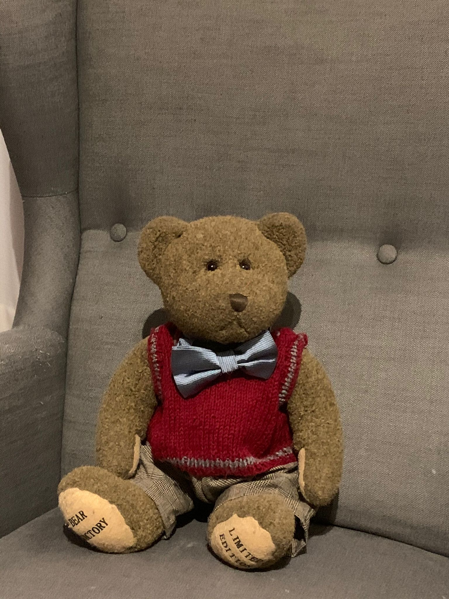

The bear, the artist, the traveler, the linguist...
On pourrait croire que O’Maney apparaît comme ça, comme par magie ou par un hasard bien pratique comme il n’y existe que dans les scénarios, et bien non. Le cher O’Maney avait toute une histoire derrière lui et c’est elle qui avait l’avait amené là. Sous ces auspices, O’Maney était né en Angleterre et avait une marraine Irlandaise qui lui valait ce « O’ » devant son nom. Il avait grandit dans une école anglaise mais cet ours est doué, très doué, très jeune il su plusieurs langues, aidé qu’il fut par des voyages aux différents membres de sa famille qui vivait un peu loin, ainsi put-il converser en français, allemand, et portugais, espagnol, breton, écossais et Irlandais, outre sa langue maternelle l’anglais. A ceci fut ajouté par ses études les langues anciennes ; grec ancien (il possède bien quelques idiomes de grecs modernes, mais juste ce qu’il faut pour survivre), et latin, les deux basiques. Il faut ajouter à cela un peu de lecture hiéroglyphique et copte, et des bases acquises au Mexique et au Pérou pendant des vacances pour aller voir des cousins, des bases, donc disais-je, dans la lecture des écritures Maya et Inca, bien qu’il ne se flatte pas de parfaitement les connaître. Il s’en amusait juste lors de son séjour, mais ne s’y est jamais attelé sérieusement. Lorsqu’il voyage par la mer c’est avec un ami. Un vieux loup de Mer effrayant for anybody else but O’Maney who accepts to take him as a moussaillon. How did they met nobody knows but they are here good friends on a boat, and so O’Maney went around the globe. O’maney basa sa résidence principale dans une forêt, that is, before meeting Coco and Felouk of course. Et ainsi, voyagea-t-il, en Angleterre d’abord et puis... mais nous verrons cela en temps voulu.